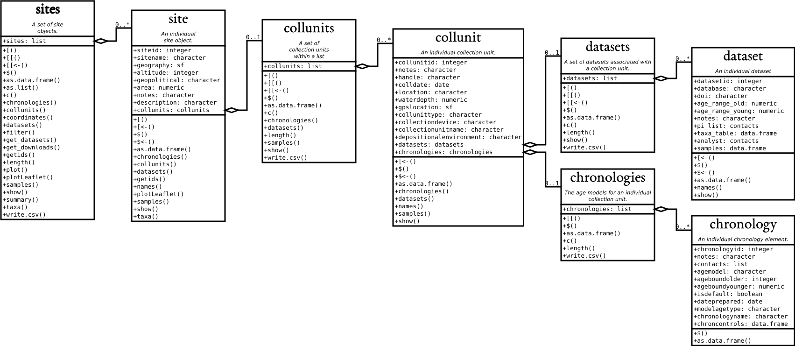

# Load up the package
if (!require("pacman")) install.packages("pacman", repos="http://cran.r-project.org")
pacman::p_load(dplyr, ggplot2, sf, geojsonsf, leaflet, raster, DT, devtools) # devtools allows us to install from online repositories5 The neotoma2 package
5.1 Introduction
This series of exercises is designed to give you hands-on practice in using APIs and the neotoma2 R package (Goring et al. 2015), both for practical reasons and for insights into how open-data systems work. The primary purpose of neotoma2 is to pass data from the Neotoma Paleoecology Database (Neotoma DB) server into your local R environment. Neotoma relies on Application Programming Interfaces (APIs) to communicate with the Neotoma Paleoecology Database, so we’ll begin with an introduction to APIs.
Much of this exercise is based on A Simple Workflow and A Not so Simple Workflow tutorials that were originally developed for a workshop convened by the European Pollen Database in June 2022. Today we’ll keep the initial analyses relatively simple, so that you can focus on learning the data structures and functions used by neotoma2. A hard-won lesson for a practicing data scientist is how much time and attention goes into data handling!
In this tutorial you will learn how to:
Use the Neotoma API
Search for sites using site names and geographic parameters
Filter results using temporal and spatial parameters
Obtain sample information for the selected datasets
Perform basic analysis including the use of climate data from rasters
This series of exercises is designed to give you hands-on practice in using APIs and the neotoma2 R package, both for practical reasons and for insights into how open-data systems work. neotoma2’s primary purpose is to pass data from the Neotoma DB server into your local R computing environment. Neotoma relies on Application Programming Interfaces (APIs) to communicate with the Neotoma Paleoecology Database, so we’ll begin with an introduction to APIs.
5.2 The Wide, Wide World of APIs
The Neotoma Paleoecology Database is a relational database, hosted on servers at Penn State’s Center for Environmental Informatics. For security reasons, direct access to these servers is quite limited, and available only to a few Neotoma and CEI programmers.
APIs offer public access points into Neotoma that anyone can use. Each API is basically a function: you provide the API with a set of operational parameters, and it returns a set of data or metadata. Each API hence is designed to support one particular task or set of tasks; it offers a narrow window into the larger Neotoma DB. REST-ful APIs follow a particular set of standards that allow them to be read by web browsers (i.e. within the HTTP protocol) and return data objects, typically in HTML, XML, JSON or other human- & machine-readable formats.
The Neotoma APIs provide a series of functions for retrieving different kinds of data from Neotoma DB. Data objects are returned in JSON format. For this exercise, we strongly recommend adding an extension to your browser that formats the JSON output to make it easier to read, such as JSONView for Firefox, and JSON Formatter for Chrome.
The APIs for Neotoma can be found here: https://api.neotomadb.org/api-docs/. Look through the lists of different APIs and find the one labeled GET /v2.0/data/sites/{siteid}. Then, click on the Try It Out button at right, enter 666 into the site identifier box, and click Execute. Then scroll down. You should see some example code in curl format (ignore this) and as a URL. If you scroll down further, you’ll see the actual data return, in JSON format. JSON is a structured data format designed to be both human-readable and machine-readable. It looks like a nested series of lists.
Now, let’s go from the API sandbox to direct use of the API URLs in a browser. Copy and paste the below URL into the URL box in your browser:
https://api.neotomadb.org/v2.0/data/sites?sitename=%devil%
This should open a new web page in your browser with a returned JSON object. For this search, the JSON object should include 16 or more sites with the name ‘devil’ in them (note the use of % as wildcards), including Devil’s Lake, WI. The opening line “status” = “success” means that the API ran successfully. Note that it is possible for an API to run successfully but return no data! For example, try:
https://api.neotomadb.org/v2.0/data/sites?sitename=devil
Here, “status” = “success” but data=[], i.e. the API successfully reported back to you that no sites in Neotoma have the exact name of ‘devil’.
Once you know what an API is, you will quickly see how widely these are used by modern browsers and websites. For example, try:
https://www.google.com/search?q=neotoma&ei=-xE_Y4XHA8GF0PEPi6-p-AU&ved=0ahUKEwjFsPSAksz6AhXBAjQIHYtXCl8Q4dUDCA0&uact=5&oq=neotoma&gs_lcp=Cgdnd3Mtd2l6EAMyDgguEIAEEIsDEKgDEJ4DMggILhCABBCLAzIICC4QgAQQiwMyCAguEIAEEIsDMggILhCABBCLAzIICAAQkQIQiwMyCAguEIAEEIsDMggILhCABBCLAzIICC4QgAQQiwMyCAgAEIAEEIsDOgoIABBHENYEELADOgcIABCwAxBDOg0IABDkAhDWBBCwAxgBOgwILhDIAxCwAxBDGAI6DwguENQCEMgDELADEEMYAjoOCC4QgAQQxwEQ0QMQ1AI6CwgAEIAEELEDEIMBOhEILhCABBCxAxCDARDHARDRAzoOCC4QgAQQsQMQgwEQ1AI6FAguEIAEELEDEIMBENQCEJsDEKgDOg4ILhCABBDHARDRAxCLAzoOCAAQgAQQsQMQgwEQiwM6EQguEIAEENQCEIsDEKgDEKQDOg4IABCRAhCLAxCmAxCoAzoNCAAQQxCLAxCoAxCmAzoFCAAQgAQ6CAguELEDEIMBOgsILhCABBDHARCvAToHCAAQQxCLAzoICC4QgAQQsQM6CAgAEIAEELEDOhEILhCABBCxAxDUAhCjAxCoAzoLCC4QsQMQgwEQiwM6BwgAEIAEEAo6DggAELEDEIMBEJECEIsDOhAIABCABBCxAxCDARAKEIsDOgoIABCABBAKEIsDOgUIABCRAkoECEEYAEoECEYYAVC5BVirCmDFDGgBcAF4AIABjAGIAdcFkgEDMy40mAEAoAEByAERuAEDwAEB2gEGCAEQARgJ2gEGCAIQARgI&sclient=gws-wiz
Note that in this demo use of the Google search API, all we did is enter ‘neotoma’ in the standard Google search window and then Google produced and formatted the above API query with a ?search parameter (and who knows what else is lurking in that massive text parameter…)
OK, now your turn:
Exercise Question 1 Use the sites API to retrieve site data for sites of interest. The sites API has a few different parameters, so try out options. Try copying and pasting the URLs into the address line of your browser, and then hitting return. In your homework exercise, provide at least two sites API calls (as URLs) with a comment line for each that explains what the API command is doing.
5.3 Getting Started With neotoma2
For this workbook we use several packages, including leaflet, sf and others. We load the packages using the pacman package, which will automatically install the packages if they do not currently exist in your set of packages.
Packages required for this section
neotoma2 is available from GitHub and can be installed in R using the devtools package via:
5.3.1 Good coding practice: explicitly naming packages and functions
Different packages in R are created independently by different teams of developers, and it’s very common for two different packages to use the same function names (the English language is finite…). This can lead to coding errors if you call a function that you know is in one package, but R guesses wrongly that you wanted a function of the same name from an entirely different package. For example, for a function like filter(), which exists in both neotoma2 and other packages such as dplyr, you may see an error that looks like:
Error in UseMethod("filter") :
no applicable method for 'filter' applied to an object of class "sites"You can avoid this error by explicitly naming which package has the function that you want to use, through the standard convention of double colons (package.name::function.name). For example, using neotoma2::filter() tells R explicitly that you want to use the filter() function in the neotoma2 package, not some other package version.
Summary: It’s good coding practice to always explicitly link packages to the functions that you are using! Your future self will thank you.
5.3.2 Getting Help with Neotoma (APIs, R, Explorer, Tilia, …)
For Geog523, the class Slack workspace is your first and best option. If you’re planning on working with Neotoma more in the future, please join us on Slack, where we manage a channel specifically for questions about the R package. You may also wish to join Neotoma’s Google Groups mailing list, and if so contact us to be added.
5.4 Neotoma2: Site Searches: get_sites()
Many users of Neotoma first want to search and explore data at the site level. There are several ways to find sites in neotoma2, but we think of sites primarily as spatial objects. They have names, locations, and are found within geopolitical units. However, sites themselves do not have associated information about taxa, dataset types, or ages. sites instead are simply the container into which we add that information. So, when we search for sites we can search by:
- siteid
- sitename
- location
- altitude (maximum and minimum)
- geopolitical unit
5.4.0.1 Searching by Site Name: sitename="%Devil%"
We may know exactly what site we’re looking for (“Devil’s Lake”), or have an approximate guess for the site name (for example, we know it’s something like “Devil Pond”, or “Devil’s Hole”).
We use the general format: get_sites(sitename="XXXXX") for searching by name.
PostgreSQL (and the API) uses the percent sign as a wildcard. So "%Devil%" would pick up “Devils Lake” for us (and would pick up “Devil’s Canopy Cave”). Note that the search query is case insensitive, so "%devil%" will work.
If we want an individual record we can use the siteid, which is a unique identifier for each site: .
5.4.0.1.1 Code
devil_sites <- neotoma2::get_sites(sitename = "%Devil%")
plotLeaflet(devil_sites)5.4.0.1.2 Result
5.4.1
Exercise Question 2 How many sites have the name ‘clear’ in them? Show both your code and provide the total count.
5.4.1.1 Searching by Location: loc=c()
The neotoma package used a bounding box for locations, structured as a vector of latitude and longitude values: c(xmin, ymin, xmax, ymax). The neotoma2 R package supports both this simple bounding box and also more complex spatial objects, using the sf package. Using the sf package allows us to more easily work with raster and polygon data in R, and to select sites using more complex spatial objects. The loc parameter works with the simple vector, WKT, geoJSON objects and native sf objects in R. Note however that the neotoma2 package is a wrapper for a simple API call using a URL (see APIs above), and URL strings have a maximum limit of 1028 characters, so the API currently cannot accept very long/complex spatial objects.
As an example of different ways that you can search by location, let’s say you wanted to search for all sites in the state of Michigan. Here are three spatial representations of Michigan: 1) a geoJSON list with five elements, 2) WKT, and 3) bounding box representation. And, as a fourth variant, we’ve transformed the mich$geoJSON element to an object for the sf package. Any of these four spatial representations work with the neotoma2 package.
mich <- list(geoJSON = '{"type": "Polygon",
"coordinates": [[
[-86.95, 41.55],
[-82.43, 41.55],
[-82.43, 45.88],
[-86.95, 45.88],
[-86.95, 41.55]
]]}',
WKT = 'POLYGON ((-86.95 41.55,
-82.43 41.55,
-82.43 45.88,
-86.95 45.88,
-86.95 41.55))',
bbox = c(-86.95, 41.55, -82.43, 45.88))
mich$sf <- geojsonsf::geojson_sf(mich$geoJSON)[[1]]
mich_sites <- neotoma2::get_sites(loc = mich$geoJSON, all_data = TRUE)You can always simply plot() the sites objects, but this won’t show any geographic context. The leaflet::plotLeaflet() function returns a leaflet() map, and allows you to further customize it, or add additional spatial data (like our original bounding polygon, mich$sf, which works directly with the R leaflet package):
5.4.1.1.1 Code
neotoma2::plotLeaflet(mich_sites) %>%
leaflet::addPolygons(map = .,
data = mich$sf,
color = "green")5.4.1.1.2 Result
5.4.2
Exercise Question 3 Which state has more sites in Neotoma, Minnesota or Wisconsin? How many in each state? Provide both code and answer.
5.4.2.1 Helper Functions for Site Searches

If we look at the UML diagram for the objects in the neotoma2 R package, we can see that there are a set of functions that can operate on sites. As we add to sites objects, using get_datasets() or get_downloads(), we are able to use more of these helper functions. We can use functions like summary() to get a more complete sense of the types of data in this set of sites.
The following code gives the summary table. We do some R magic here to change the way the data is displayed (turning it into a datatable() object using the DT package), but the main function is the summary() call.
5.4.2.1.1 Code
neotoma2::summary(mich_sites)5.4.2.1.2 Result
5.4.3
We can see that there are no chronologies associated with the site objects. This is because, at present, we have not pulled in the dataset information we need. All we know from get_sites() are the kinds of datasets we have.
5.4.4 Searching for Datasets:
Now that we know how to search for sites, we can start to search for datasets. As we’ve discussed before, in the Neotoma data model, each site can contain one or more collection units, each of which can contain one or more datasets. Similarly, a sites object contains collectionunits which contain datasets. From the table above, we can see that some of the sites we’ve looked at contain pollen data. However, so far we have only downloaded the sites data object and not any of the actual pollen data, it’s just that (for convenience) the sites API returns some information about datasets, to make it easier to navigate the records.
With a sites object we can directly call get_datasets(), to pull in more metadata about the datasets. At any time we can use datasets() to get more information about any datasets that a sites object may contain. Compare the output of datasets(mich_sites) to the output of a similar call using the following:
5.4.4.1 Code
mich_datasets <- neotoma2::get_datasets(mich_sites, all_data = TRUE)
datasets(mich_datasets)5.4.4.2 Result
5.4.5
Question 4: How many different kinds of datasets are available at Devil’s Lake, WI? Show both code and answer. Ensure that your code just retrieves datasets for just this single site.
5.4.6 Filter Records
If we choose to pull in information about only a single dataset type, or if there is additional filtering we want to do before we download the data, we can use the filter() function. For example, if we only want pollen records, and want records with known chronologies, we can filter:
5.4.6.1 Code
mich_pollen <- mich_datasets %>%
neotoma2::filter(datasettype == "pollen" & !is.na(age_range_young))
neotoma2::summary(mich_pollen)5.4.6.2 Result
5.4.7
Note, that we are filtering on two conditions. (You may want to look up the operators being used in the above code: ==, &, and ! to understand what they accomplish in the code.) We can see now that the data table looks different, and there are fewer total sites.
5.4.8 Retrieving sample() data.
The sample data are the actual data that scientists usually want - counts of pollen grains, lists of vertebrate fossil occurrences, etc. Because sample data can have fairly large data volumes (each dataset may contain many samples), which can strain server bandwidth and local computing memory, we try to call get_downloads() after we’ve done our preliminary filtering. After get_datasets(), you have enough information to filter based on location, time bounds, and dataset type. When we move to get_downloads() we can do more fine-tuned filtering at the analysis unit or taxon level.
The following command may take a few moments to run. (If it takes too long, we have stored an already-downloaded version of the function output as an RDS data file that you can load directly into R.)
mich_dl <- mich_pollen %>% get_downloads(all_data = TRUE)...........................# mich_dl <- readRDS('data/mich_dl.rds')Once we’ve downloaded the sample data, we now have information for each site about all the associated collection units, the datasets, and, for each dataset, all the samples associated with the datasets. To extract all the samples we can call:
allSamp <- samples(mich_dl)When we’ve done this, we get a data.frame that is 38062 rows long and 37 columns wide. The reason the table is so wide is that we are returning data in a long format. Each row contains all the information you should need to properly interpret it:
[1] "age" "agetype" "ageolder" "ageyounger"
[5] "chronologyid" "chronologyname" "units" "value"
[9] "context" "element" "taxonid" "symmetry"
[13] "taxongroup" "elementtype" "variablename" "ecologicalgroup"
[17] "analysisunitid" "sampleanalyst" "sampleid" "depth"
[21] "thickness" "samplename" "datasetid" "siteid"
[25] "sitename" "lat" "long" "area"
[29] "sitenotes" "description" "elev" "collunitid"
[33] "database" "datasettype" "age_range_old" "age_range_young"
[37] "datasetnotes" For some dataset types, or analyses some of these columns may not be needed, however, for other dataset types they may be critically important. To allow the neotoma2 package to be as useful as possible for the community we’ve included as many as we can.
5.4.8.1 Extracting Taxa
If you want to know what taxa we have in a dataset, you can use the helper function taxa() on the sites object. The taxa() function gives us, not only the unique taxa, but two additional columns, sites and samples, that tell us how many sites the taxa appear in, and how many samples the taxa appear in, to help us better understand how common individual taxa are.
5.4.8.1.1 Code
neotomatx <- neotoma2::taxa(mich_dl)5.4.8.1.2 Results
The taxonid values can be linked to the taxonid column in the samples(). This allows us to build taxon harmonization tables if we choose to. Note also that the taxonname is in the field variablename. Individual sample counts are reported in Neotoma as variables. A “variable” may be either a species for which we have presence or count data, a geochemical measurement, or any other proxy, such as charcoal counts. Each stored entry for a variable includes the units of measurement and the value.
5.4.8.2 Taxonomic Harmonization (Simple)
A standard challenge in Neotoma (and in biodiversity research more generally) is that different scientists use different names for taxonomic entities such as species. Even if everyone agrees on a common taxonomy, it’s quite possible that a given fossil might be only partially identifiable, perhaps just to genus or even family. Hence, when working with data from Neotoma, a common intermediary step is to ‘harmonize’ all the taxa names stored in Neotoma into some standard names of interest to you.
Let’s say we want to know the past distribution of Pinus. We want all the various pollen morphotypes that are associated with Pinus (e.g. Pinus strobus, Pinus strobus-type, Pinus undif., Pinus banksiana/resinosa) to be grouped together into one aggregated taxon names called Pinus. There are several ways of doing this, either directly by exporting the file and editing each individual cell, or by creating an external “harmonization” table.
Programmatically, we can harmonize all the taxon names using matching and transformation. We’re using dplyr type coding here to mutate() the column variablename so that any time we detect (str_detect()) a variablename that starts with Pinus (the .* represents a wildcard for any character [.], zero or more times [*]) we replace() it with the character string "Pinus". Note that this changes Pinus in the allSamp object, but if we were to call samples() again, the taxonomy would return to its original form.
As a first step, we’re going to filter the ecological groups to include only UPHE (upleand/heath) and TRSH (trees and shrubs). (More information about ecological groups is available from the Neotoma Online Manual.) After converting all _Pinus._ records to Pinus* we then sum the counts of the Pinus records.
allSamp <- allSamp %>%
dplyr::filter(ecologicalgroup %in% c("UPHE", "TRSH")) %>%
mutate(variablename = replace(variablename,
stringr::str_detect(variablename, "Pinus.*"),
"Pinus"),
variablename = replace(variablename,
stringr::str_detect(variablename, "Picea.*"),
"Picea")) %>%
group_by(siteid, sitename,
sampleid, variablename, units, age,
agetype, depth, datasetid,
long, lat) %>%
summarise(value = sum(value), .groups='keep')There were originally 6 different taxa identified as being within the genus Pinus (including Pinus, Pinus subg. Pinus, and Pinus undiff.). The above code reduces them all to a single taxonomic group Pinus. We can check out the unique names by using:
5.4.8.2.1 Code
neotomatx %>%
ungroup() %>%
filter(stringr::str_detect(variablename, "Pinus")) %>%
summarise(pinus_spp = unique(variablename))
# I actually like Base here for the one-liner:
# unique(grep("Pinus", neotomatx$variablename, value = TRUE))5.4.8.2.2 Result
Question 5: Follow the Pinus example above, but now for Picea. How many taxon names were aggregated into your Picea name?
If we want to store a record of our choices outside of R, we can use an external table. For example, a table of pairs (what we want changed, and the name we want it replaced with) can be generated, and it can include regular expressions (if we choose):
| original | replacement |
|---|---|
| Abies.* | Abies |
| Vaccinium.* | Ericaceae |
| Typha.* | Aquatic |
| Nymphaea | Aquatic |
| … | … |
We can get the list of original names directly from the taxa() call, applied to a sites object, and then export it using write.csv(). We can also do some exploratory plots of the data:
5.4.8.2.3 Code
taxaplots <- taxa(mich_dl)
# Save the taxon list to file so we can edit it subsequently.
readr::write_csv(taxaplots, "data/mytaxontable.csv")5.4.8.2.4 Result
The plot is mostly for illustration, but we can see, as a sanity check, that the relationship is as we’d expect.
5.5 Simple Analytics
5.5.1 Stratigraphic Plotting: Building a Pollen Diagram
As you’ve seen already, stratigraphic diagrams are a very common way of viewing geological data, in which time is represented vertically and with older materials at bottom, just like in the sediment record. Palynologists use a particular form of a stratigraphic diagram called a pollen diagram.
We can use packages like rioja to do stratigraphic plotting for a single dataset. Here, we’ll take a few key species at a single site and plot them.
# Get a particular site, select only taxa identified from pollen (and only trees/shrubs)
# Transform to proportion values.
devils_samples <- get_sites(siteid = 666) %>%
get_downloads() %>%
samples().....devils_samples <- devils_samples %>%
mutate(variablename = replace(variablename,
stringr::str_detect(variablename, "Pinus.*"),
"Pinus")) %>%
group_by(siteid, sitename,
sampleid, variablename, units, age,
agetype, depth, datasetid,
long, lat) %>%
summarise(value = sum(value), .groups='keep')
onesite <- devils_samples %>%
group_by(age) %>%
mutate(pollencount = sum(value, na.rm = TRUE)) %>%
group_by(variablename) %>%
mutate(prop = value / pollencount) %>%
arrange(desc(age))
# Spread the data to a "wide" table, with taxa as column headings.
widetable <- onesite %>%
dplyr::select(age, variablename, prop) %>%
mutate(prop = as.numeric(prop)) %>%
filter(variablename %in% c("Pinus", "Betula", "Quercus",
"Tsuga", "Ulmus", "Picea"))
counts <- tidyr::pivot_wider(widetable,
id_cols = age,
names_from = variablename,
values_from = prop,
values_fill = 0)This appears to be a fairly long set of commands, but the code is pretty straightforward, and it provides you with significant control over the taxa for display, units pf measurement, and other elements of your data before you get them into the wide matrix (depth by taxon) that most statistical tools such as the vegan package or rioja use. To plot we can use rioja’s strat.plot(), sorting the taxa using weighted averaging scores (wa.order). We’ve also added a CONISS plot to the edge of the plot, to show how the new wide data frame works with distance metric functions. (We’ll talk more about distance and dissimilarity metrics in upcoming labs.)
clust <- rioja::chclust(dist(sqrt(counts)),
method = "coniss")
plot <- rioja::strat.plot(counts[,-1] * 100, yvar = counts$age,
title = devils_samples$sitename[1],
ylabel = "Calibrated Years BP",
xlabel = "Pollen (%)",
y.rev = TRUE,
clust = clust,
wa.order = "topleft", scale.percent = TRUE)
rioja::addClustZone(plot, clust, 4, col = "red")
Question 5: Make a stratigraphic pollen diagram in rioja, for a site of your choice (not Devils Lake) and taxa of your choice. Show code and resulting diagram.
5.5.2 Change Taxon Distributions Across Space and Time
The true power of Neotoma is its ability to support large-scale analyses across many sites, many s time periods within sites, many proxies, and many taxa. As a first dipping of our toes in the water, lets look at temporal trends in abundance when averaged across ites. We now have site information across Michigan, with samples, and with taxon names. Let’s say we are interested in looking at the distributions of the selected taxa across time, their presence/absence:
taxabyage <- allSamp %>%
filter(variablename %in% c("Pinus", "Betula", "Quercus",
"Tsuga", "Ulmus", "Picea"),
age < 11000) %>%
group_by(variablename, "age" = round(age * 2, -3) / 2) %>%
summarise(n = length(unique(siteid)), .groups = 'keep')
samplesbyage <- allSamp %>%
filter(variablename %in% c("Pinus", "Betula", "Quercus",
"Tsuga", "Ulmus", "Picea")) %>%
group_by("age" = round(age * 2, -3) / 2) %>%
summarise(samples = length(unique(siteid)), .groups = 'keep')
groupbyage <- taxabyage %>%
inner_join(samplesbyage, by = "age") %>%
mutate(proportion = n / samples)
ggplot(groupbyage, aes(x = age, y = proportion)) +
geom_point() +
geom_smooth(method = 'gam',
method.args = list(family = 'binomial')) +
facet_wrap(~variablename) +
#coord_cartesian(xlim = c(22500, 0), ylim = c(0, 1)) +
scale_x_reverse() +
xlab("Proportion of Sites with Taxon") +
theme_bw()Warning in eval(family$initialize): non-integer #successes in a binomial glm!
Warning in eval(family$initialize): non-integer #successes in a binomial glm!
Warning in eval(family$initialize): non-integer #successes in a binomial glm!
Warning in eval(family$initialize): non-integer #successes in a binomial glm!
Warning in eval(family$initialize): non-integer #successes in a binomial glm!
Warning in eval(family$initialize): non-integer #successes in a binomial glm!
Warning in eval(family$initialize): non-integer #successes in a binomial glm!
Warning in eval(family$initialize): non-integer #successes in a binomial glm!
Warning in eval(family$initialize): non-integer #successes in a binomial glm!
Warning in eval(family$initialize): non-integer #successes in a binomial glm!
Warning in eval(family$initialize): non-integer #successes in a binomial glm!
Warning in eval(family$initialize): non-integer #successes in a binomial glm!
Warning in eval(family$initialize): non-integer #successes in a binomial glm!
Warning in eval(family$initialize): non-integer #successes in a binomial glm!
Warning in eval(family$initialize): non-integer #successes in a binomial glm!
Warning in eval(family$initialize): non-integer #successes in a binomial glm!
Warning in eval(family$initialize): non-integer #successes in a binomial glm!
Warning in eval(family$initialize): non-integer #successes in a binomial glm!
Warning in eval(family$initialize): non-integer #successes in a binomial glm!
Warning in eval(family$initialize): non-integer #successes in a binomial glm!
Warning in eval(family$initialize): non-integer #successes in a binomial glm!
Warning in eval(family$initialize): non-integer #successes in a binomial glm!
Warning in eval(family$initialize): non-integer #successes in a binomial glm!
Warning in eval(family$initialize): non-integer #successes in a binomial glm!
Warning in eval(family$initialize): non-integer #successes in a binomial glm!
Warning in eval(family$initialize): non-integer #successes in a binomial glm!
Warning in eval(family$initialize): non-integer #successes in a binomial glm!
Warning in eval(family$initialize): non-integer #successes in a binomial glm!
Warning in eval(family$initialize): non-integer #successes in a binomial glm!
Warning in eval(family$initialize): non-integer #successes in a binomial glm!
Warning in eval(family$initialize): non-integer #successes in a binomial glm!
Warning in eval(family$initialize): non-integer #successes in a binomial glm!
Warning in eval(family$initialize): non-integer #successes in a binomial glm!
Warning in eval(family$initialize): non-integer #successes in a binomial glm!
Warning in eval(family$initialize): non-integer #successes in a binomial glm!
Warning in eval(family$initialize): non-integer #successes in a binomial glm!
Warning in eval(family$initialize): non-integer #successes in a binomial glm!
Warning in eval(family$initialize): non-integer #successes in a binomial glm!
Warning in eval(family$initialize): non-integer #successes in a binomial glm!
Warning in eval(family$initialize): non-integer #successes in a binomial glm!
Warning in eval(family$initialize): non-integer #successes in a binomial glm!
Warning in eval(family$initialize): non-integer #successes in a binomial glm!
Warning in eval(family$initialize): non-integer #successes in a binomial glm!
Warning in eval(family$initialize): non-integer #successes in a binomial glm!
Warning in eval(family$initialize): non-integer #successes in a binomial glm!
Warning in eval(family$initialize): non-integer #successes in a binomial glm!
Warning in eval(family$initialize): non-integer #successes in a binomial glm!
Warning in eval(family$initialize): non-integer #successes in a binomial glm!
Warning in eval(family$initialize): non-integer #successes in a binomial glm!
Warning in eval(family$initialize): non-integer #successes in a binomial glm!
Warning in eval(family$initialize): non-integer #successes in a binomial glm!
Warning in eval(family$initialize): non-integer #successes in a binomial glm!
Warning in eval(family$initialize): non-integer #successes in a binomial glm!
Warning in eval(family$initialize): non-integer #successes in a binomial glm!
Warning in eval(family$initialize): non-integer #successes in a binomial glm!
Warning in eval(family$initialize): non-integer #successes in a binomial glm!
Warning in eval(family$initialize): non-integer #successes in a binomial glm!
Warning in eval(family$initialize): non-integer #successes in a binomial glm!
Warning in eval(family$initialize): non-integer #successes in a binomial glm!
Warning in eval(family$initialize): non-integer #successes in a binomial glm!
Warning in eval(family$initialize): non-integer #successes in a binomial glm!
Warning in eval(family$initialize): non-integer #successes in a binomial glm!
Warning in eval(family$initialize): non-integer #successes in a binomial glm!
Warning in eval(family$initialize): non-integer #successes in a binomial glm!
Warning in eval(family$initialize): non-integer #successes in a binomial glm!
Warning in eval(family$initialize): non-integer #successes in a binomial glm!
Warning in eval(family$initialize): non-integer #successes in a binomial glm!
Warning in eval(family$initialize): non-integer #successes in a binomial glm!
Warning in eval(family$initialize): non-integer #successes in a binomial glm!
Warning in eval(family$initialize): non-integer #successes in a binomial glm!
Warning in eval(family$initialize): non-integer #successes in a binomial glm!
Warning in eval(family$initialize): non-integer #successes in a binomial glm!
Warning in eval(family$initialize): non-integer #successes in a binomial glm!
Warning in eval(family$initialize): non-integer #successes in a binomial glm!
We can see clear patterns of change for at least some taxa, and the smoothed surfaces are modeled using Generalized Additive Models (GAMs) in R, so we can have more or less control over the actual modeling using the gam or mgcv packages. Depending on how we divide the data we can also look at shifts in altitude, latitude or longitude to better understand how species distributions and abundances changed over time in this region.
Note that for some taxa, they always have a few pollen grains in all pollen samples, so this ‘proportion of sites with taxon’ isn’t very informative. Calculating a metric like average abundance might be more useful.
Question 6: Repeat the above example, for a different state or other geographic region of your choice.
5.6 Conclusion
So, we’ve done a lot in this exercise. We’ve (1) learned how APIs work (2) searched for sites using site names and geographic parameters, (3) filtered results using temporal and spatial parameters, (4) built a pollen diagram, and (5) done a first-pass spatial mapping of taxa. We will build upon this methodological foundation in future lab exercises.